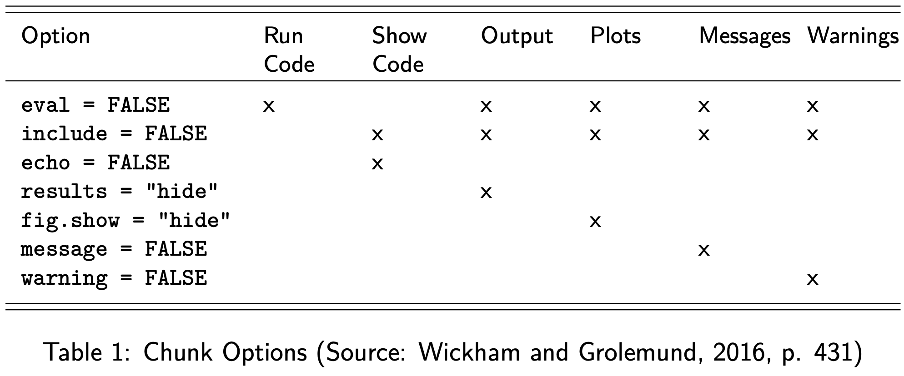
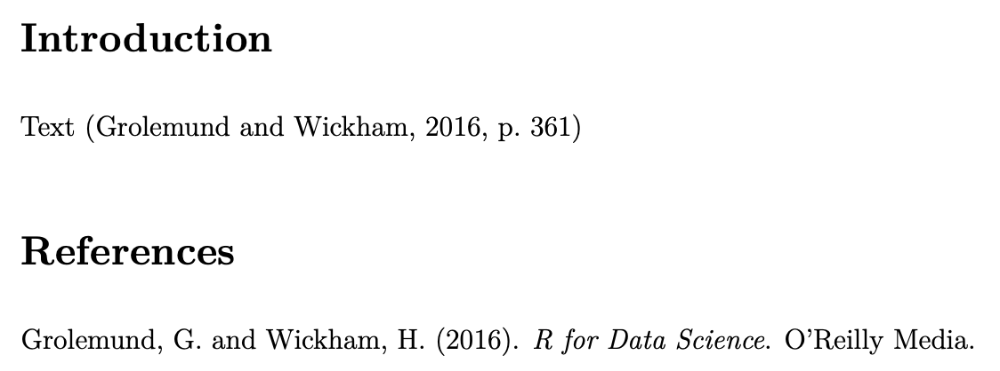
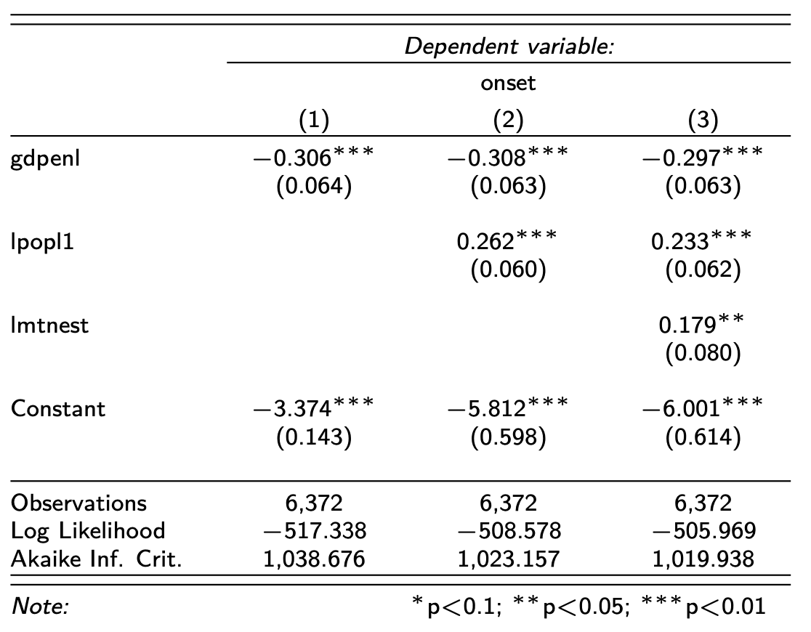
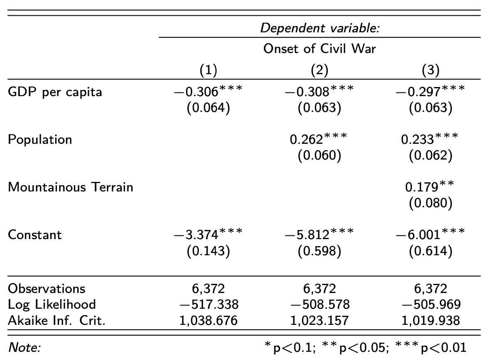
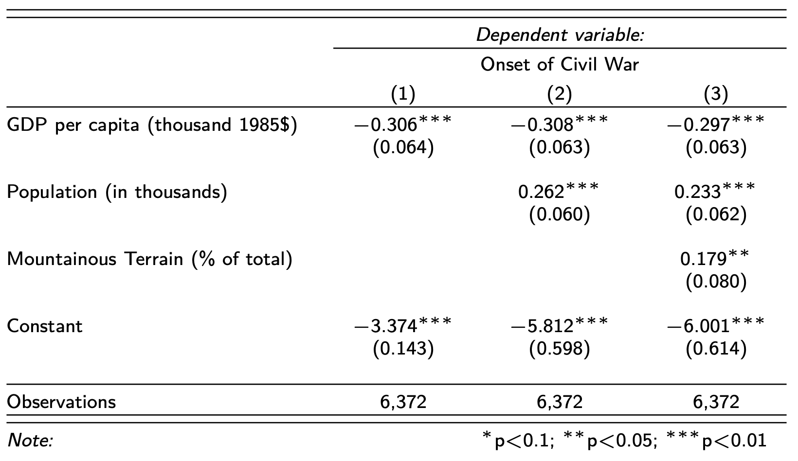
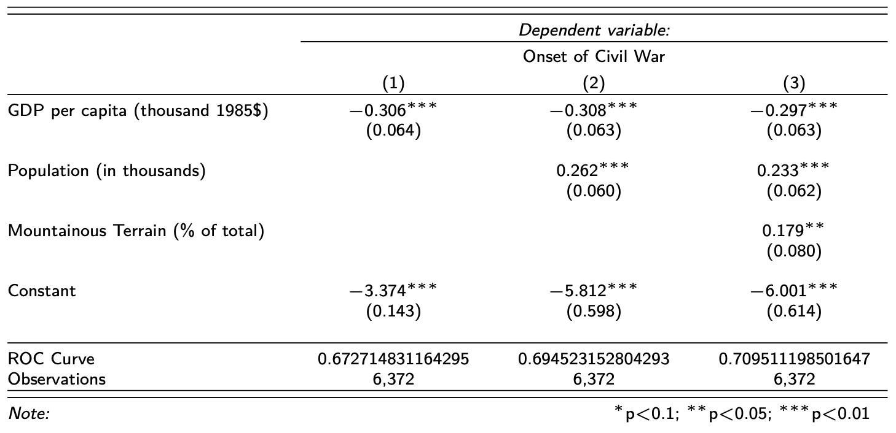
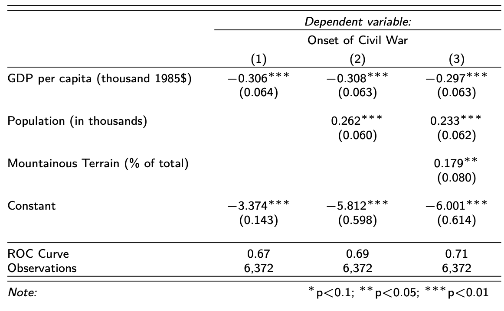
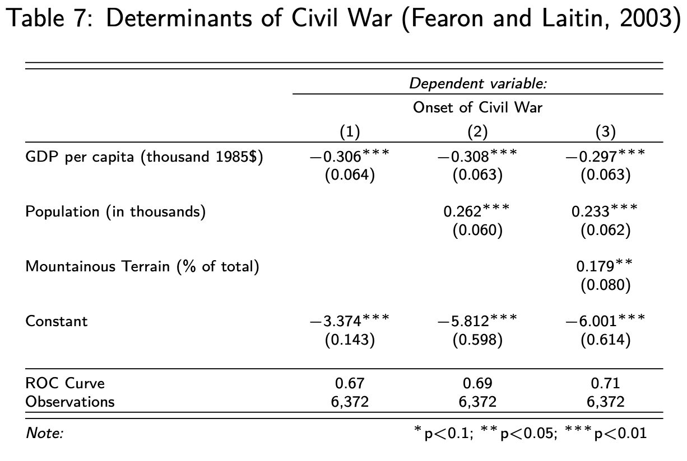

11 R Markdown
11.1 Content
One of the more persuasive arguments to use R (over say SPSS) is its ability to easily make work reproducible. This means that you could give your RScript to another person, and they would be able to replicate, step by step your data preparation and analysis, obtaining the same results. This is not only a fundamental part of any scientific enquiry, but also helpful to you, should you wish to replicate your own work at a later stage. Take it from me: after a few months you will have forgotten any data management procedure or steps used in an analysis. How do you achieve this? You can, of course, use annotations in your RScript to explain to others and yourself what you have done in each step. And in fact you should do exactly that as a matter of routine. But we can go a step further than that.
You might have asked yourself when studying the previous Chapters how to get all the great output in the form of Tables and Figures into an essay, or your dissertation. The answer to this is Markdown. It lets you create reproducible essays / articles with great ease, and even has a feature to create your bibliography and take care of your referencing. Intrigued? Then read on!
By the way, this very webpage is also created with R Markdown.
Introduction
So, what is R Markdown? As promised in the introduction,
R Markdown provides a unified authoring framework for data science, combining your code, its results, and your prose commentary. R Markdown documents are fully reproducible and support dozens of output formats, like PDFs, Word files, slideshows, and more. (https://r4ds.had.co.nz/r-markdown.html)
Usage
For communicating to decision makers, who want to focus on the conclusions, not the code behind the analysis.
For collaborating with other data scientists (including future you!), who are interested in both your conclusions, and how you reached them ( i.e. the code).
As an environment in which to do data science, as a modern day lab notebook where you can capture not only what you did, but also what you were thinking.
The Components of an R Markdown Document
- YAML
- Text
- Code Chunks
The YAML
- Acronym for “Yet Another Markup Language”
- Contains the settings for the entire document
- Primarily parameters and bibliography
Text
Writing
- Basically, you can just write the text as you always would.
- It’s “only” the formatting that differs.
Compiling
- Markdown is not WYSIWYG (What You See Is What You Get)
- Compiling is called “Knitting”
Headings
# Heading
## Sub-Heading
### Sub-Sub HeadingEmphasis
*italic*
**bold**
\texttt(courier)
\underline(underline)Links
- Just insert the link
Lists
-
-
- Numbered Lists
1.
a.
b.
2. Line Breaks
This will not produce a line break:
line 1
line 2But this will:
line 1
line 2Block Quotes
- Simply precede the quote with “\(>\)”
- The block will turn green when you do so
Equations
- Two ways to set equations
- Either wrapped in $ signs
- or
Example
The command
results in:
\[\begin{equation} Y = \beta_{0} + \beta_{1} x_{i} + \epsilon \end{equation}\]
To suppress the numbering you type:
\[\begin{equation*} Y = \beta_{0} + \beta_{1} x_{i} + \epsilon \end{equation*}\]
List of Symbols
You can find a good compilation of symbols here:
Code Chunks
In-Line R Code
You can include R Code in Markdown by wrapping it in
Shortcut:
- Mac: Option + Command + I
- Windows: Ctrl + Alt + I
Example
results in
Chunk Options
Types of Output Suppressed by:

Examples
Display, but not calculate:
Suppress Messages from Packages
Suppress Messages from Packages and only display
Figures and Graphs
You can also use this to include figures and graphs:
Add a Caption!
```{r echo=FALSE, out.width='75%', fig.cap="\\label{fig:test}Test Caption"}
knitr::include_graphics('./filename.png')
```And then refer to it in the text with
Example
```{r echo=FALSE, out.width='75%', fig.cap="\\label{fig:spell}RStudio Task Bar"}
knitr::include_graphics('./spell.png')
```
As we can see in \ref{fig:spell}turns into
Figure 11.1: RStudio Task Bar
As we can see in Figure 11.1
Useful Stuff
Spell-Checker
Bibliography
- It is possible (and most highly recommended) to include an automatic bibliography in Markdown
- This requires more coding language and LaTeX
Perks
- It only includes what you cite
- It sorts the references alphabetically
- Consistent citation
- Automatically conform to PAIS style
Getting Started
- Download and install:
- Mac: MacTeX (http://www.tug.org/mactex/)
- Windows: MiKTeX (https://miktex.org/)
- These contain a complete TeX system with LaTeX itself and editors to write documents.
More on: https://www.latex-project.org/get/
Instructions
- Place in the working directory the file “bibliography.bib”
- Add a heading at the very end of the document called
Citations in Markdown
Citations
Text [@grolemund:2016, p. 361]
Text [@grolemund:2016, pp. 33-35, 38-39 and *passim*].Suppress Author
Grolemund and Wickham write that ... [-@grolemund:2016] This can be useful when the author is already mentioned in the text.
The .bib file
Every citation needs to have a reference in the .bib file, such as:
@book{grolemund:2016,
author={Garrett Grolemund and Hadley Wickham},
title={R for Data Science},
publisher={O'Reilly Media},
year={2016}}You can only edit this file in LaTeX
If you want to learn more about , there is another Moodle Skills Module called Academic Writing in LaTeX available.
Input
turns into this output

stargazer
I have little to no patience for students (or academics!) who are fiddling around in MS Word and are using all sorts of fancy options to make their Tables and Figures as unreadable as possible. You can tell that I am quite particular when it comes to the tabular display of statistical output.
When you study for a degree in Political Science, you are acquiring the skills to write professionally about a topic of the discipline, and to analyse a research question within its remit. James A. Stimson puts it very aptly in his article Writing in Political Science when he says:
You are a professional author. Learn to use the tools of authorship or choose a profession for which you are better suited. (p. 10)
Stimson says this in reference to Tables in particular, as there are some principles that any academic author needs to observe. Let me quote again from his article here:
Table design is important, and often done badly. It requires you to think about what the reader knows and wants to know from your work and then very carefully lay out the table to tell the story. (…)
Tables should always be composed so that a reader can pick one up and understand its content, without having read the text. That means it must be fully self-contained, depending on nothing that is explained only in the text. The opposite is also true; a reader should be able to skip the table and understand the analysis completely from the text. (p.10)
To observe most of the principles set out in Stimson’s article (please read it, it’s worth its weight in gold), R has a snazzy package that helps you on the way. It is called stargazer and is pretty much the best invention since sliced bread:
is an R package that creates code, HTML code and ASCII text for well-formatted regression tables, with multiple models side-by-side, as well as for summary statistics tables, data frames, vectors and matrices.
(https://cran.r-project.org/web/packages/stargazer/vignettes/stargazer.pdf)
Advantages
- Its ease of use
- The large number of models it supports
- Its beautiful aesthetics
Estimating a Model, replicating the work by Fearon and Laitin (2003)
Data Prep
fearon <- read_dta("data/fearon.dta")
fearon$onset[fearon$onset==4] <- NA
fearon$onset <- as.factor(fearon$onset)Model 1
model1 <- glm(onset ~ gdpenl,
family = binomial(link = logit),
na.action = na.exclude,
data = fearon)
prob_model1 <- predict(model1, type="response")
fearon$prob_model1 <- unlist(prob_model1)
roc_model1 <- roc(fearon$onset, fearon$prob_model1)
Setting levels: control = 0, case = 1
Setting direction: controls < casesModel 2
model2 <- glm(onset ~ gdpenl + lpopl1,
family = binomial(link = logit),
na.action = na.exclude,
data = fearon)
prob_model2 <- predict(model2, type="response")
fearon$prob_model2 <- unlist(prob_model2)
roc_model2 <- roc(fearon$onset, fearon$prob_model2)
Setting levels: control = 0, case = 1
Setting direction: controls < casesModel 3
model3 <- glm(onset ~ gdpenl + lpopl1 + lmtnest,
family = binomial(link = logit),
na.action = na.exclude,
data = fearon)
prob_model3 <- predict(model3, type="response")
fearon$prob_model3 <- unlist(prob_model3)
roc_model3 <- roc(fearon$onset, fearon$prob_model3)
Setting levels: control = 0, case = 1
Setting direction: controls < casesNow we use stargazer to put the results into a table. I am suppressing the annoying heager here, and am adjusting the font size, too.
```{r results='asis', echo=F, message=F, tab.cap = NULL}
stargazer(model1, model2, model3,
header=F,
font.size = "tiny")
```Output

You will note that stargazer adds the asterisks that Stimson is so strongly (and correctly) opposed to. The rating of lower p-values with increasing numbers of asterisks suggests a certain goal (like wanting to stay in a five-star hotel), but this goal is nonesense. If you want to know more about this, I recommend an excellent module called “Introduction to Quantitative Political Analysis I” where you learn about the p-value and the Type I and Type II errors. stargazer’s practice to include these asterisks is therefore misguided, but since most journals insist on this nonsense, it is worthwhile to get used to it.
Font Sizes
- In descending Order
I will ignore the {r results='asis', echo=F, message=F, tab.cap = NULL} environment now, and only show you the actual stargazer script to be used.
Adding Variable Names, again quoting Stimson:
The usual problem is that the names are too brief to convey what the indicator is. (And remember the rule about being self-contained: if the reader needs to page back to find out what some ambiguous name stands for, you have violated the rule and caused reader impatience.) Abbreviate nothing. And never ever ever use computer variable names to stand for concepts. These are personal code words that convey no meaning to readers. (p.10)
stargazer(model1, model2, model3,
header=F,
font.size = "tiny",
covariate.labels = c("GDP per capita (thousand 1985\\$)",
"Population (in thousands)",
"Mountainous Terrain (\\% of total)"),
dep.var.labels = "Onset of Civil War")
Suppress Statistics
stargazer(model1, model2, model3,
header=F,
font.size = "tiny",
covariate.labels = c("GDP per capita (thousand 1985\\$)",
"Population (in thousands)",
"Mountainous Terrain (\\% of total)"),
dep.var.labels = "Onset of Civil War",
omit.stat = c("aic", "ll"))
For a full list of abbreviations for statistics, see page 22 of https://cran.r-project.org/web/packages/stargazer/stargazer.pdf
Add ROC Curve
stargazer(model1, model2, model3,
header=F,
font.size = "tiny",
covariate.labels = c("GDP per capita (thousand 1985\\$)",
"Population (in thousands)",
"Mountainous Terrain (\\% of total)"),
dep.var.labels = "Onset of Civil War",
omit.stat = c("aic", "ll"),
add.lines = list(c("ROC Curve", auc(roc_model1),
auc(roc_model2), auc(roc_model3))))
Round ROC Curve
stargazer(model1, model2, model3,
header=F,
font.size = "tiny",
covariate.labels = c("GDP per capita (thousand 1985\\$)",
"Population (in thousands)",
"Mountainous Terrain (\\% of total)"),
dep.var.labels = "Onset of Civil War",
omit.stat = c("aic", "ll"),
add.lines = list(c("ROC Curve", round(auc(roc_model1),2),
round(auc(roc_model2),2),
round(auc(roc_model3),2))))
You can also control the number of decimal places with the digits = option. So if you want to round everything to two decimal places you would include digits = 2.
Lastly, let’s label the Table, so that a reader knows what is being shown.
stargazer(model1, model2, model3,
header=F,
font.size = "tiny",
covariate.labels = c("GDP per capita (thousand 1985\\$)",
"Population (in thousands)",
"Mountainous Terrain (\\% of total)"),
dep.var.labels = "Onset of Civil War",
omit.stat = c("aic", "ll"),
add.lines = list(c("ROC Curve", round(auc(roc_model1),2),
round(auc(roc_model2),2),
round(auc(roc_model3),2))),
title = "Determinants of Civil War (Fearon and Laitin, 2003)")
This is a beautiful and informative Table which should be the standard to which you work.
11.2 Summary
- Markdown -
Functions list
| function | package | description |
|---|---|---|
| roc() | c(“.GlobalEnv”, “pROC”) | Estimate ROC Curve |
| as.factor() | base | coerce a vector to factor |
| library() | base | load an R package |
| unlist() | base | NA |
| read_dta() | haven | NA |
| include_graphics() | knitr | NA |
| binomial() | stats | NA |
| glm() | stats | Estimate a General Linear Model |
| predict() | stats | Predict Probability |
The solutions for the exercises will be available here on 2021-03-12.